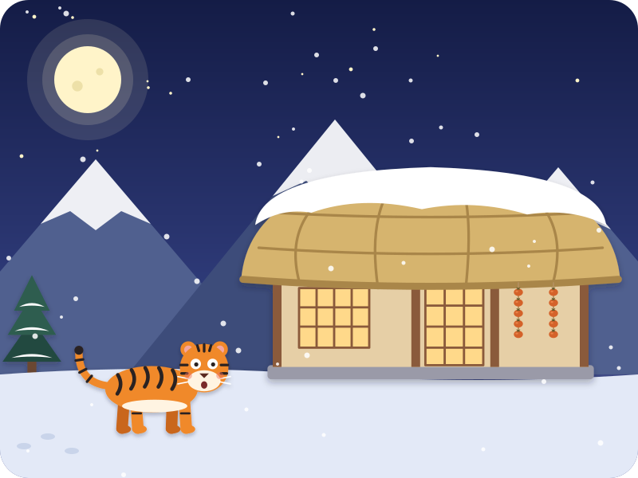
A folk tale from Korea
The Tiger and the Dried Persimmon
"Story, story — are your ears open?" Kai: "Open!"
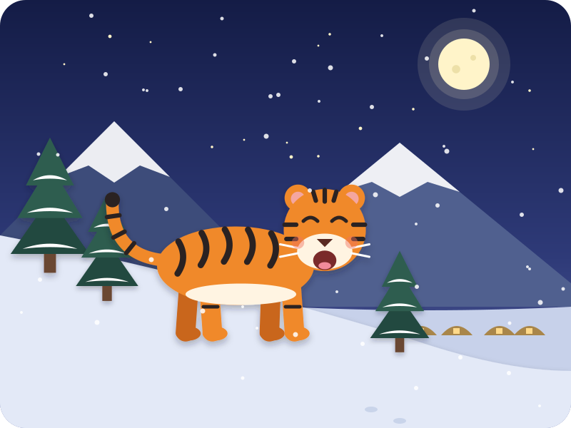
One snowy winter night, long ago in Korea, a big tiger came down the mountain. His tummy was rumbling.
He puffed out his chest: "I'm the biggest, scariest tiger in all the mountains! ROAR!" Kai roars
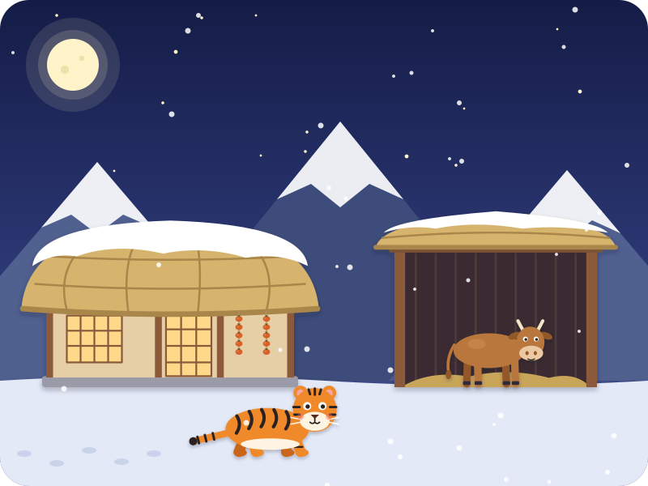
He crept into a little village. There was a cottage with a straw roof, and a cowshed with a cow inside.
Tiptoe, tiptoe went the tiger through the snow. Kai tiptoes his fingers
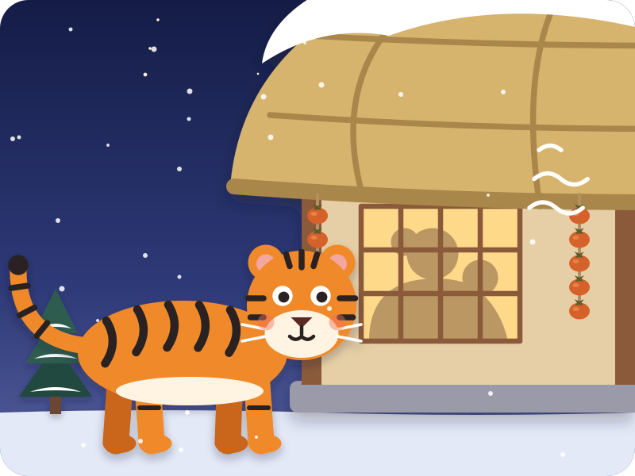
Inside, all cosy and safe behind the shut doors, a baby was crying.
"Waaah! Waaah!" Kai cries like the baby
The tiger stopped under the window to listen.
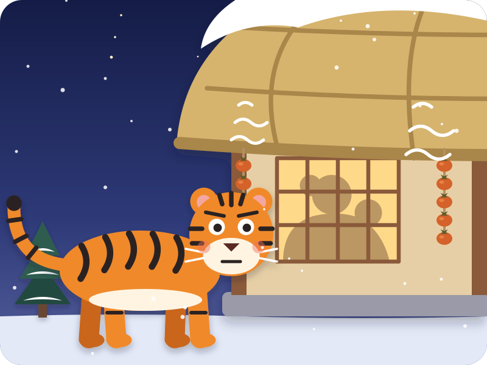
"Hush now," said the mother. "Stop crying — a tiger is coming!"
But the baby cried even louder. "WAAAH!" louder, Kai!
The tiger frowned. "Not scared of me? But I'm the biggest, scariest tiger!"
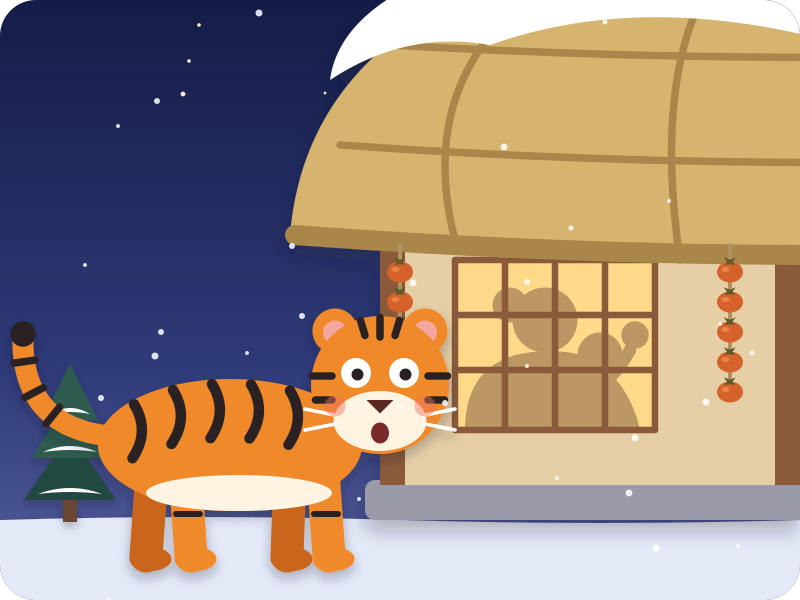
Then the mother said, "Look! Here's a gotgam — a sweet dried persimmon."
And the baby stopped crying. Just like that. Shhh… finger on your lips
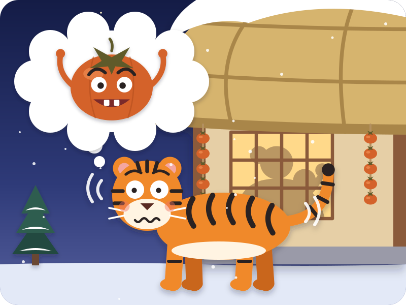
The tiger's whiskers wobbled. "A gotgam? What's a gotgam?"
"The baby isn't scared of a tiger… but it stopped for a gotgam. A gotgam must be a terrible monster — even scarier than me!"
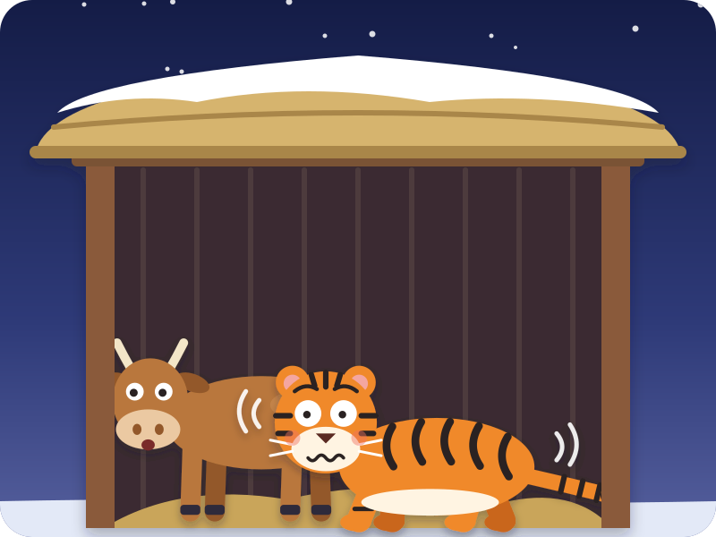
"I'll hide until the gotgam goes away!" He squeezed into the cowshed and crouched in the straw, shaking.
The cow blinked at him. "Moo?" Kai moos
The tiger was much too scared to think about his tummy now.
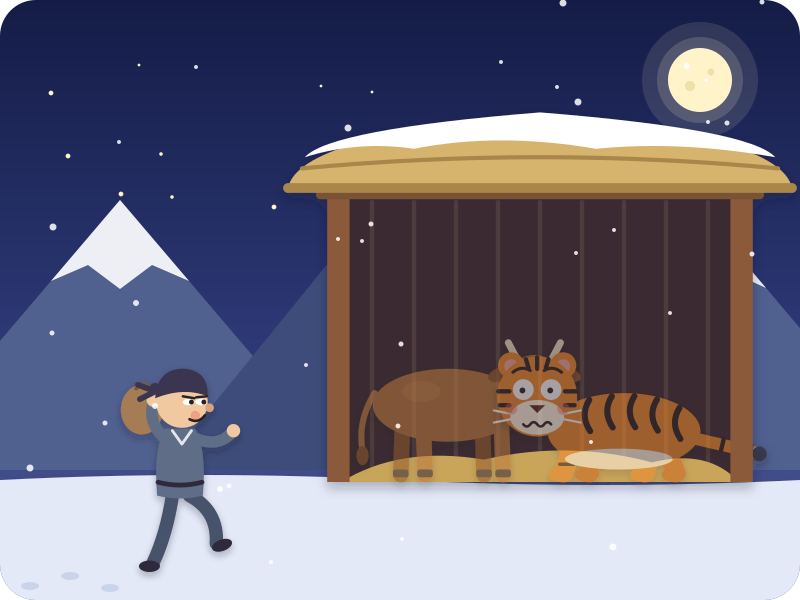
Now, that same night, a silly, sneaky cow thief came creeping along. He wanted to take the cow — and that is not allowed!
In the dark shed he felt something big… and furry… and warm. "Ooh, a nice fat cow!"
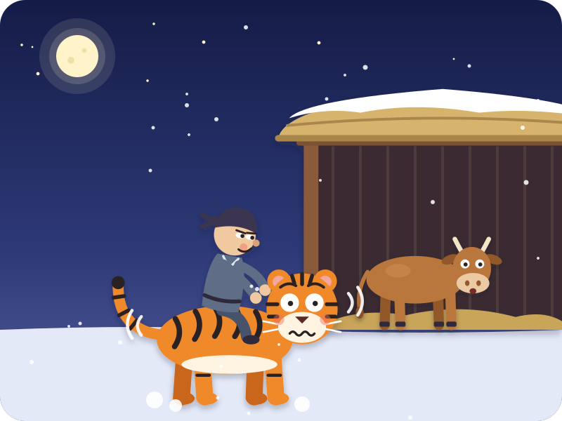
THUMP! The thief hopped onto the tiger's back. Kai pats his knees: thump!
The tiger nearly jumped out of his stripes. "Eeek! The gotgam has got me!"
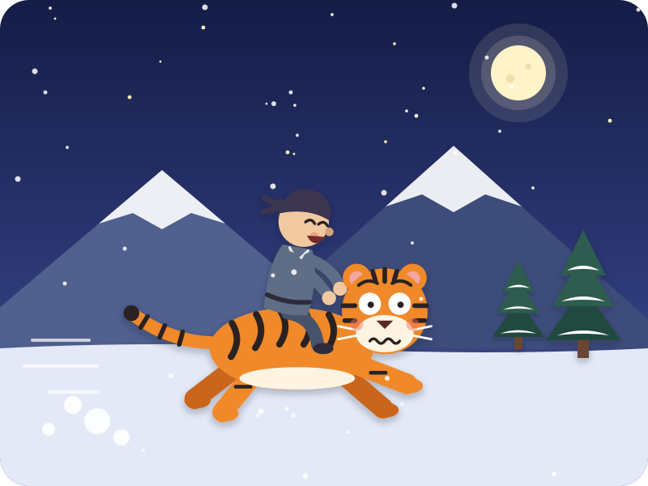
Off ran the tiger, out of the village and across the snowy fields — run, run, run! Kai pats his knees fast
The thief held on tight. "Whoa! What a fast cow!"
When the sun began to come up, the thief looked down and saw… orange fur. Black stripes. "A TIGER!"
He let go — plop! — into a soft snowdrift, and sat up with snow on his head. Then he ran home as fast as he could, and he never, ever went sneaking for cows again.
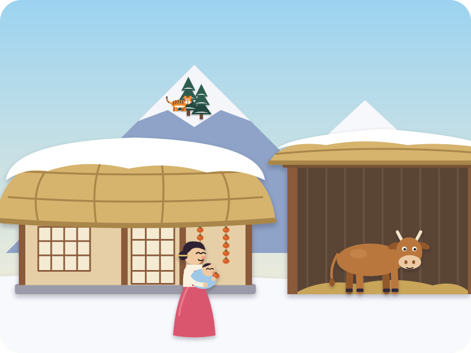
In the morning, the cow was safe in her shed, and the baby was munching a sweet gotgam. Nom, nom, nom!
And far up the mountain, the tiger whispered: "I'm the biggest, scariest tiger… except for the GOTGAM!" Kai whispers "gotgam!"
The End
"Snip, snap, snout — this tale's told out."
Swipe back to read it again
Driving? Tell it without the page · six beats
The picture book is for home, bedtime, or a passenger. In the car, tell it from memory — bold is Kai's part.
- One snowy night a hungry tiger comes down the mountain: "I'm the biggest, scariest tiger! ROAR!"
- He creeps to a village house and hears a baby crying inside — "Waaah! Waaah!"
- "Hush, a tiger is coming!" — the baby cries even louder. "Here's a gotgam, a dried persimmon!" — and the baby stops: shhh.
- The tiger thinks a gotgam must be a monster, scarier than him, and hides in the cowshed. The cow says "Moo?"
- A sneaky cow thief jumps on the tiger's back in the dark — thump! "The gotgam's got me!" — and the tiger runs: run, run, run!
- At sunrise the thief sees stripes, plops into the snow and runs away. The baby eats the gotgam, and the tiger whispers: "…except for the GOTGAM!"
After the story · car-friendly wondering
"What did the tiger think a gotgam looked like? What does a gotgam really look like?"
"Why did the baby stop crying for a gotgam?"
"If you were the cow, what would you say to the tiger in the shed?"
Where this story comes from
This is one of the best-known Korean folk tales, 호랑이와 곶감 (Horangi-wa Gotgam, "The Tiger and the Dried Persimmon"). It has an entry in the Encyclopedia of Korean Culture (Academy of Korean Studies). It is told in many forms, and we have not traced it back to one first collector, so we don't name one. A well-known English telling is Janie Jaehyun Park's picture book The Tiger and the Dried Persimmon (Groundwood Books, 2002), which she says she learned from her grandmother. In the usual shape of the tale, the tiger hears that "a tiger is coming!" doesn't hush a crying baby but a gotgam does, so he decides the gotgam must be something terrible. When a cow thief climbs onto his back in the dark, the tiger thinks the gotgam has caught him and runs for his life, and the thief, finding he is riding a tiger, flees too. This retelling is our own, for a 4-year-old. The tiger is hungry but never near the baby: the doors stay shut and he only listens. He is too scared to think about the cow. We kept the thief, but as a silly sneak whose only trouble is a soft snowdrift and a lesson learned. We have not checked how every telling ends the thief's ride; the snowdrift, the "biggest, scariest tiger" refrain, the hanbok and the snowy-morning ending are our picture-book choices.